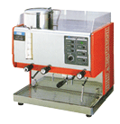
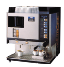
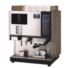
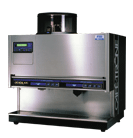
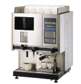
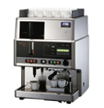
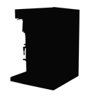
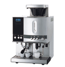
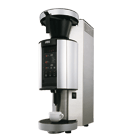
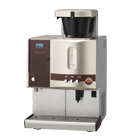

In 1984, we at FMI introduced our first original-brand commercial coffee machine CAFE-TRONE to the Japanese market. Since this time, we at FMI continued to unveil new models. We at FMI successfully developed the world first iced coffee machine in 1988, and the world first iced and hot hybrid in1990. "CAFE-TRONE Auto", a full-automatic model released in 1992, brought FMI to a solid position as a top brand of drip machine coffee. Favored by many users in the market, and for its functionality and beauty in design, Good Design Award (G-mark) was given to CAFE-TRONE in 2004. CAFE-TRONE will continue to evolve to catch up with the rapidly changing market needs,
1980

CT-4000
─ 1984 ─
In those days, when hand drip was still the main stream, there was no coffee machine to offer quality drip coffee with non pressurized brewing system.
FMI was the first to introduce a coffee machine capable of delivering "delicious" drip coffee.

CT-101
─ 1986 ─
Fine brew settings became possible with this new generation model for consistent coffee quality. FMI released this model as a new machine with new design.
1990

CT-111
─ 1990 ─
FMI combined iced coffee system, and presented a new concept all-season machine with both hot and iced coffee capability.

CT-330A
─ 1992 ─
FMI released its 1st full-automatic, single cup coffee machine.

CT-121
─ 1994 ─
Delicate brewing control became possible by use of micro processor. FMI released CT-121 as a model that brews highly aromatic rich coffee at low energy consumption.

CT-131
─ 1998 ─
FMI released as a new model that pursues thorough user friendliness.
2000

700CM
─ 2000 ─
Custom order model.

CT-141
─ 2003 ─
Renewed design. Utilized a vacuum pot to keep quality of brewed coffee. It became possible to keep and serve hot coffee for a long time, enhancing cost performance by reducing loss.

CTC-210/220
─ 2005 ─
Well-designed compact brewer with vacuum container.
2010
2011

CT-150
─ 2011 ─
Pursued affordability while succeeding all merits of previous mode. Various functions improved for easier operation.